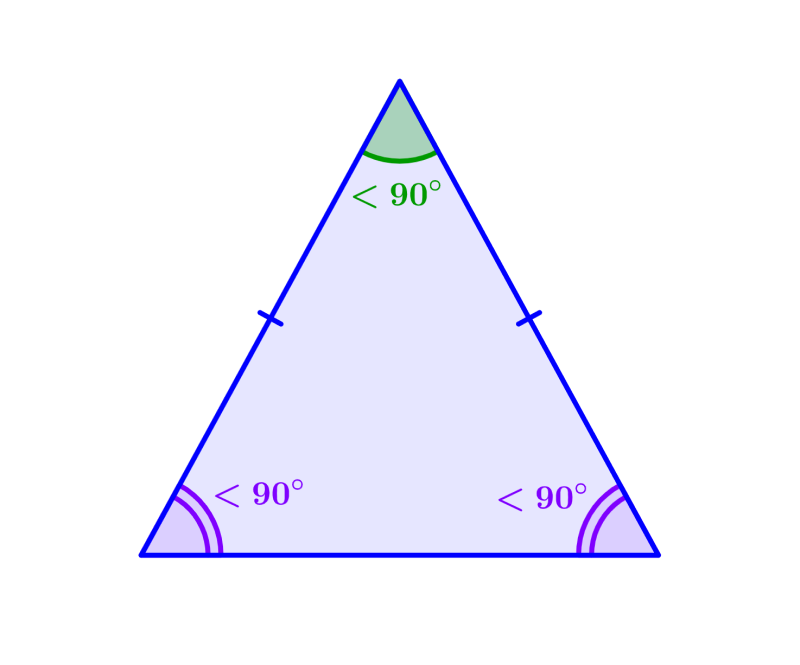
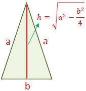
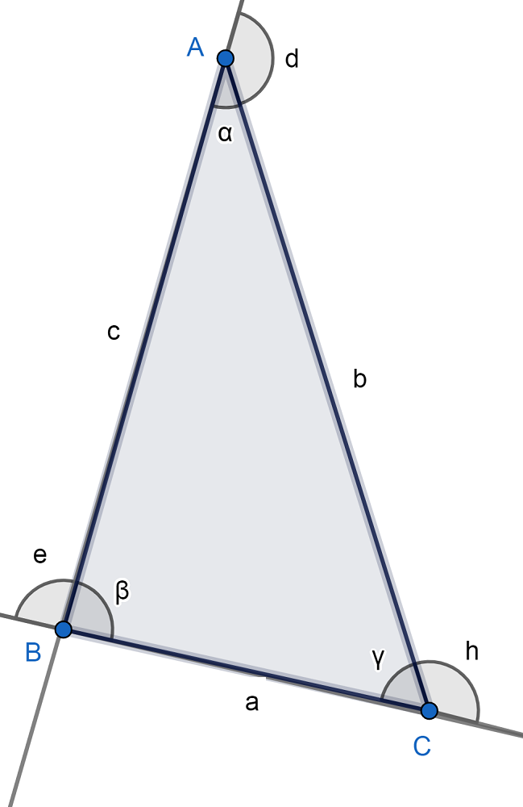

Triangulo Acutángulo
¿Qué es?
El triángulo acutángulo o agudo es una figura geométrica, el cual tiene tres ángulos internos agudos, es decir, la medida de cada uno de sus ángulos es menor a 90°.
Donde: A < 90°, B < 90° y C < 90°.

Formula para calcular el area
El área de un triángulo es igual a base por altura partido por 2. La altura es la recta perpendicular trazada desde un vértice al lado opuesto (o su prolongación).
Área = (b x h) / 2

Calcular el perímetro
Perímetro(P): Es la suma de los lados que, según la figura de arriba donde señalamos los elementos, sería: P=a+b+c.

Características
- La característica principal que distingue este tipo de triángulo del resto es que, como ya mencionamos, sus ángulos internos son agudos; es decir, la medida de cada uno de sus ángulos es menor a 90 grados.
- Tiene dos ángulos agudos que son complementarios, es decir, que la suma de ambos es de 90 grados
- Forman parte del conjunto de triángulos oblicuángulos. Este conjunto está formado por los triángulos que no son rectángulos.
- Sus lados cumplen con la desigualdad triangular: esto significa que la medida del lado más largo es menor que la suma de las medidas de los otros dos lados. Por ejemplo, si un triángulo acutángulo tiene lados de medidas 3, 4 y 5, entonces 5 es el lado más largo y cumple con la desigualdad triangular (5 < 3 + 4).
- Es una figura convexa: esto significa que si trazamos una línea recta entre cualquier par de puntos del triángulo, esta línea no pasará por fuera del triángulo.